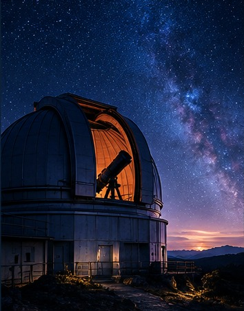

Sobre COSMO
Un espacio creado para acercar la astronomía a quienes sienten curiosidad por el universo.
Nuestra misión
Presentar la astronomía de una forma sencilla, visual y atractiva para despertar la curiosidad por el cosmos.
- ✦ Acercar la ciencia al público.
- ✦ Explorar los objetos del universo.
- ✦ Promover la curiosidad científica.
- ✦ Descubrir la historia de la exploración espacial.
¿Por qué mirar al cielo?
Observar el universo nos permite conocer nuestro lugar dentro de un espacio mucho mayor y comprender mejor los fenómenos que nos rodean.